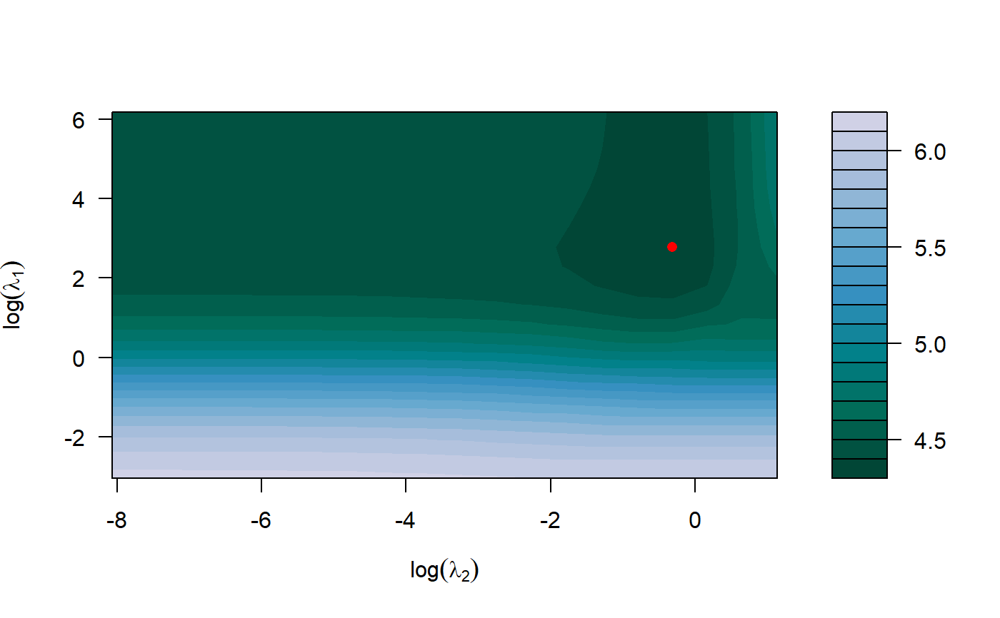

R/tune_xrnet.R
tune_xrnet.Rdk-fold cross-validation for hierarchical regularized regression xrnet
tune_xrnet( x, y, external = NULL, unpen = NULL, family = c("gaussian", "binomial"), penalty_main = define_penalty(), penalty_external = define_penalty(), weights = NULL, standardize = c(TRUE, TRUE), intercept = c(TRUE, FALSE), loss = c("deviance", "mse", "mae", "auc"), nfolds = 5, foldid = NULL, parallel = FALSE, control = list() )
| x | predictor design matrix of dimension \(n x p\), matrix options include:
|
|---|---|
| y | outcome vector of length \(n\) |
| external | (optional) external data design matrix of dimension \(p x q\), matrix options include:
|
| unpen | (optional) unpenalized predictor design matrix, matrix options include:
|
| family | error distribution for outcome variable, options include:
|
| penalty_main | specifies regularization object for x. See |
| penalty_external | specifies regularization object for external. See |
| weights | optional vector of observation-specific weights. Default is 1 for all observations. |
| standardize | indicates whether x and/or external should be standardized. Default is c(TRUE, TRUE). |
| intercept | indicates whether an intercept term is included for x and/or external. Default is c(TRUE, FALSE). |
| loss | loss function for cross-validation. Options include:
|
| nfolds | number of folds for cross-validation. Default is 5. |
| foldid | (optional) vector that identifies user-specified fold for each observation. If NULL, folds are automatically generated. |
| parallel | use |
| control | specifies xrnet control object. See |
A list of class tune_xrnet with components
mean cross-validated error for each penalty combination. Object returned is a vector if there is no external data (external = NULL) and matrix if there is external data.
estimated standard deviation for cross-validated errorsObject returned is a vector if there is no external data (external = NULL) and matrix if there is external data.
loss function used to compute cross-validation error
the value of the loss function for the optimal cross-validated error
first-level penalty value that achieves the optimal loss
second-level penalty value that achieves the optimal loss (if external data is present)
fitted xrnet object using all data, see xrnet for details of object
k-fold cross-validation is used to determine the 'optimal' combination of hyperparameter values, where
optimal is based on the optimal value obtained for the user-selected loss function across the k folds. To efficiently traverse all possible
combinations of the hyperparameter values, 'warm-starts' are used to traverse the penalty from largest
to smallest penalty value(s). Note that the penalty grid for the folds is generated
by fitting the model on the entire training data. Parallelization is enabled through the foreach and
doParallel R packages. To use parallelization, parallel = TRUE, you must first create the cluster
makeCluster and then register the cluster registerDoParallel. See the parallel, foreach,
and/or doParallel R packages for more details on how to setup parallelization.
## cross validation of hierarchical linear regression model data(GaussianExample) ## 5-fold cross validation cv_xrnet <- tune_xrnet( x = x_linear, y = y_linear, external = ext_linear, family = "gaussian", control = xrnet.control(tolerance = 1e-6) ) ## contour plot of cross-validated error plot(cv_xrnet)